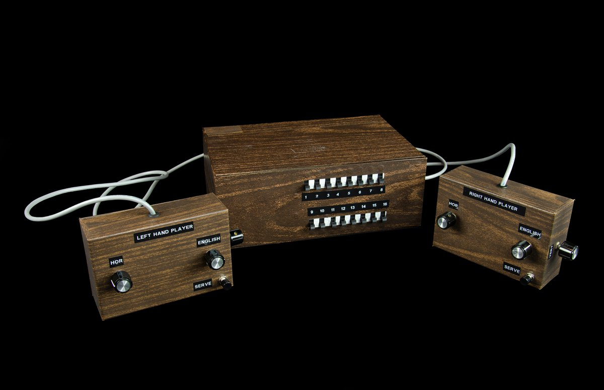

O Berço dos Consoles Domésticos
A "Brown Box", desenvolvida por Ralph Baer em 1968, é amplamente reconhecida como o protótipo que deu origem aos consoles de videogame domésticos que conhecemos hoje. Seu nome, literalmente "Caixa Marrom", vinha da cor do revestimento de madeira usado no aparelho
